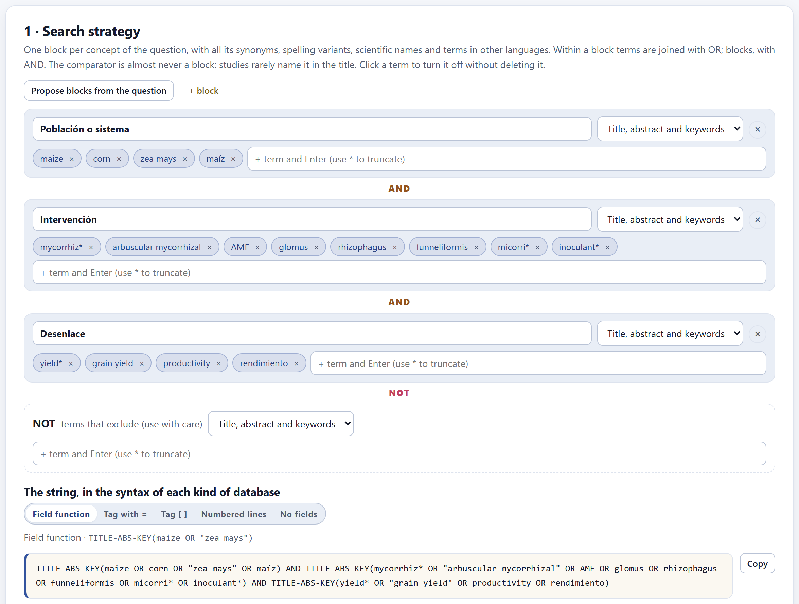
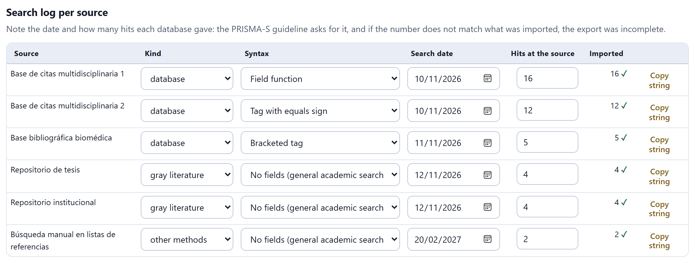
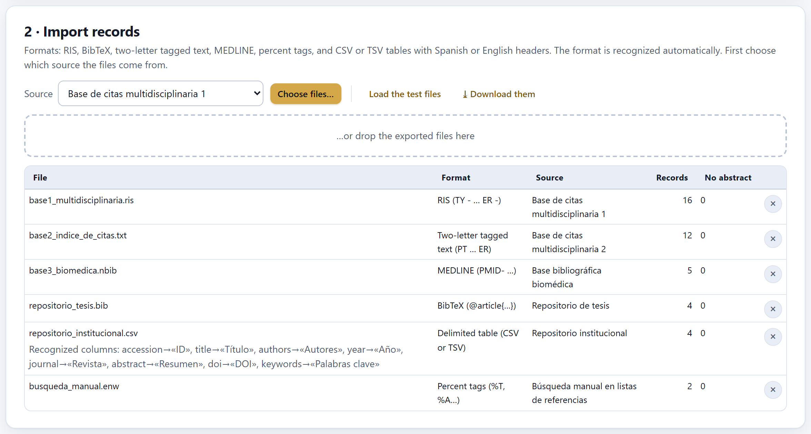
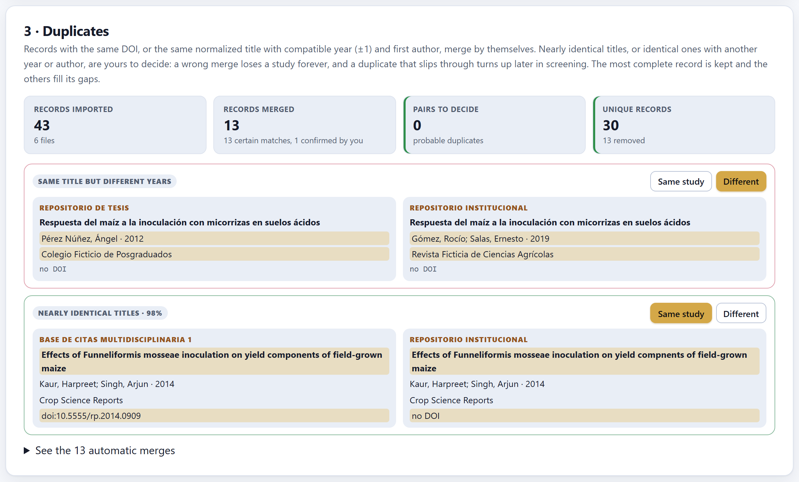
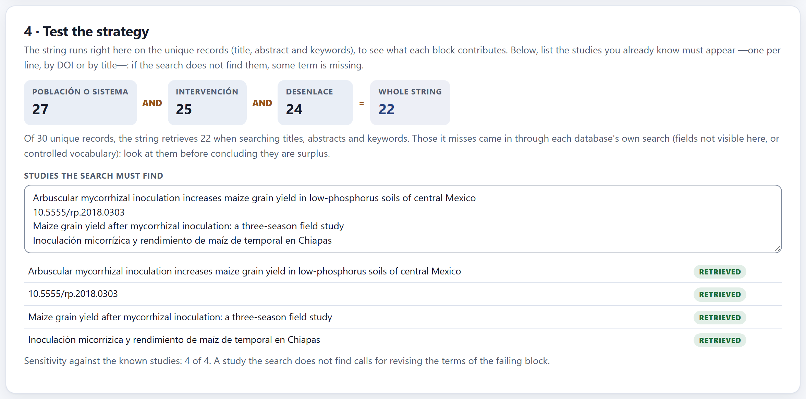
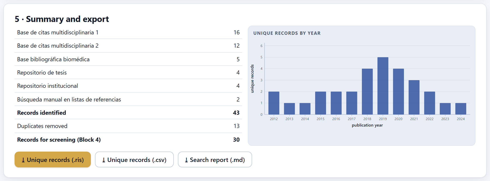

The strategy is built from concept blocks and written in the syntax of each kind of database; the search is run in each database and its results are imported here, in any of six formats. Duplicates are then merged, with your decision in the doubtful cases, and you check that the string finds the studies you already know exist. What comes out is the list of unique records to be screened in Block 4.
A systematic search is built with one block per concept of the question—the population, the intervention, the outcome—and each block gathers every way an author might have written that concept: synonyms, spelling variants, scientific names, acronyms and terms in other languages. Within a block, terms are joined with OR; blocks are joined with AND.

mycorrhiz*) picks up mycorrhiza, mycorrhizal, mycorrhizae…| Propose blocks from the question | Creates one block for each element of the Block 2 question that is searched for—in PICO, the population, the intervention and the outcome—with the meaningful words of that element as the first terms. It is a draft: add the synonyms. |
| + block | Adds an empty block; its name is up to you. |
| Field of each block | Title, abstract and keywords (the usual choice), Title only (more precise, less sensitive) or All fields. |
| Terms | Type them and confirm with Enter. A phrase of several words is put in quotation marks automatically. * truncates and ? replaces a single character. Clicking a chip turns it off without deleting it (useful for testing); the ✕ deletes it. |
| NOT | Excluding terms, subtracted from everything else. Use it with care: a poorly thought-out NOT removes relevant studies that mention the excluded term in passing. |
An AND requires all blocks to appear in the record. Studies hardly ever name their control in the title or abstract (“uninoculated,” “absolute control”), so a comparator block would discard many relevant ones. The search must be sensitive—it must not lose studies—even if it brings noise: Block 4 screening takes care of the noise, but nothing recovers what the search did not bring in.
Bibliographic databases do not speak the same language. The app writes the same blocks in five syntaxes, described by their form rather than by a product; the help pages of each database tell you which one it uses.
| Syntax | What it looks like |
|---|---|
| Field function | TITLE-ABS-KEY(maize OR "zea mays") |
| Tag with equals sign | TS=(maize OR "zea mays") |
| Bracketed tag | maize[tiab] OR "zea mays"[tiab] |
| Numbered lines with suffix | 1 (maize or zea mays).ti,ab,kw.—one line per block and a final line that combines them |
| No fields | maize OR "zea mays"—for general academic search engines |
The Copy button puts the string on the clipboard so you can paste it into the database. Below it, the app warns you about what to watch for in each syntax; for example, “General academic search engines do not truncate: the asterisk was removed. Write out the variants that matter (singular and plural).”

Every source declared in the protocol, and every source of an imported file, has its own row. Record there the date of the search and how many hits the database gave: PRISMA 2020 (item 6) and its extension for searches, PRISMA-S, ask you to report it. The Imported column counts the records that actually came in; if it does not match what the database gave, ≠ appears: many databases export in batches, and an incomplete export is the most common and most silent error in a review.
The kind of each source (database, gray literature or other methods) is the same as in Block 2 and can be changed here; the syntax is chosen per source, and Copy string copies the string written in that syntax. The most recent date in the log is the live field {{search.date}} of Block 9.

| Format | How it is recognized |
|---|---|
| RIS | Two-letter tags with hyphens: TY - … ER - |
| BibTeX | @article{…} entries, with LaTeX accents that are converted |
| Two-letter tagged text | Tags without a hyphen, of the PT … ER kind, exported by citation indexes |
| MEDLINE | Tags of the PMID- … kind |
| Percent tags | %T, %A… from reference managers |
| Delimited table (CSV or TSV) | Headers in Spanish or English; the separator (comma, semicolon or tab) and the columns are detected automatically |
The No abstract column counts the records that arrived without an abstract: they are screened on the title alone, and it is worth knowing how many there are. Load the test files imports the six fictitious files of the example, and ⤓ Download them saves them so you can see what each format looks like inside.
The same article appears in several databases, and the same experiment sometimes in a thesis, a conference paper and an article. The app merges them at two levels:
| Certain matches | Same DOI, or the same normalized title with the same year (±1) and a compatible first author. They are merged automatically. |
| Pairs to decide | Nearly identical titles (their similarity is shown as a %), or identical ones with another year or another author. You decide them with Same study or Different. |

In each pair, whatever differs between the two records is highlighted. When records are merged, the most complete one is kept and the others fill its gaps (a DOI, an abstract). See the N automatic merges shows what was merged automatically, in case you want to check it.
A wrong merge loses a study forever: nobody sees it again. A duplicate that slips through, on the other hand, reappears in screening and is excluded there with the reason “duplicate.” That is why the app never merges a doubtful case on its own.
The merged card counts records removed, and its note counts pairs. They do not always agree: if a study appears in three databases, its three copies form three pairs, but two records are removed. In the example, 13 certain pairs and one confirmed pair removed 13 records: 43 imported, 30 unique.

The string is run right here on the unique records, in title, abstract and keywords, to see how much each block cuts. It is normal for the string to retrieve fewer records than were imported: each database also searches fields that are not visible here, or its controlled vocabulary. Look at those records before concluding that they are surplus.
The most useful part of this card is the list of studies the search must find: those the team already knows before searching, one per line, by DOI or by title. If one of them does not appear, the strategy is missing a term, and the app reports the sensitivity against those known studies.
| If a known study is not retrieved | then read it, find how it names each concept and add that term to the failing block; run the search in the databases again. |
| If the log shows ≠ for a source | then the export was incomplete: export again in batches. |
| If a source brings many records without an abstract | then consider exporting again with the abstract, or be ready to read more full texts. |

Three downloads: the unique records in RIS (for a reference manager) and in CSV (for a spreadsheet), and the search report in Markdown, with the blocks, the string in each syntax, the log and the duplicates: it is the supplementary material that PRISMA 2020 asks for in item 7.
“There are no concept blocks.”, the truncation warning of the no-fields syntax, the ≠ mark in the log and the pairs to decide. As long as a pair remains undecided, its records go on to screening as different records.